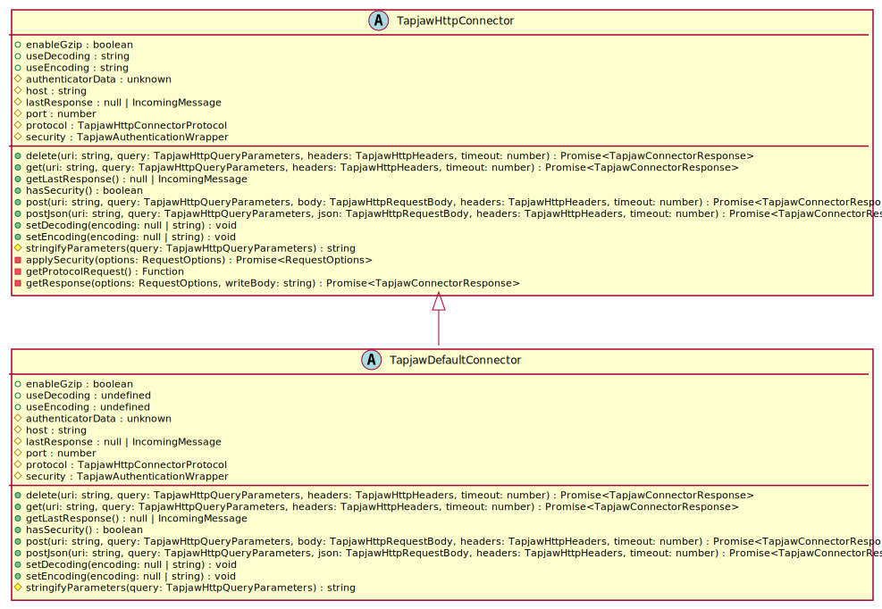

Hierarchy-Diagram
{kind=link}
Legend
 abstract class
abstract class
 public property
public property
 protected property
protected property
 public method
public method
 protected method
protected method
 private method
private method
Hierarchy
- TapjawHttpConnector
- TapjawDefaultConnector
Index
Constructors
constructor
Returns TapjawDefaultConnector
Properties
Protected authenticator
Abetiary container for authentication data which can be used in conjunction with a request to an API endpoint.
enable
Enable/Disable gzip decompressing of API response.
Protected host
Protected last
Containers the response object of the previous request.
Protected port
Protected protocol
Protected Optional security
use
Apply a character set encoding to decode the API response buffer.
This happens prior to encoding, so you can perform a decoding and encoding in conjunction with TapjawHttpConnector.useEncoding.
use
Apply a character set encoding to encode the response prior to returning.
This happens after decoding the respone buffer, so you can decode the buffer prior to encoding the buffer. you can also simply encode the buffer without any prior decoding.
Methods
delete
Send a DELETE request to the API.
Parameters
uri: string
string
query: TapjawHttpQueryParameters
TapjawHttpQueryParameters
Optional headers: TapjawHttpHeaders
TapjawHttpHeaders (optional)
timeout: number = DEFAULT_TIMEOUT
Returns <internal>.Promise<TapjawConnectorResponse>
get
Send a GET request to the API.
Parameters
uri: string
string
query: TapjawHttpQueryParameters
Optional headers: TapjawHttpHeaders
TapjawHttpHeaders (optional)
timeout: number = DEFAULT_TIMEOUT
Returns <internal>.Promise<TapjawConnectorResponse>
get
Returns null | IncomingMessage
has
Whether a authentication wrapper has been injected into the connector or not.
Returns boolean
post
Send a POST request to the API.
Parameters
uri: string
string
query: TapjawHttpQueryParameters
TapjawHttpQueryParameters
body: TapjawHttpRequestBody
TapjawHttpRequestBody
Optional headers: TapjawHttpHeaders
TapjawHttpHeaders (optional)
timeout: number = DEFAULT_TIMEOUT
Returns <internal>.Promise<TapjawConnectorResponse>
post
Send a POST request to the API.
Parameters
uri: string
string
query: TapjawHttpQueryParameters
TapjawHttpQueryParameters
json: TapjawHttpRequestBody
TapjawHttpRequestBody
Optional headers: TapjawHttpHeaders
TapjawHttpHeaders (optional)
timeout: number = DEFAULT_TIMEOUT
Returns <internal>.Promise<TapjawConnectorResponse>
set
Set the character set encoding to decode the API response data before encoding or returning.
Parameters
encoding: null | string
TapjawHttpConnectorProtocol|string|null
Returns void
set
Set the character set encoding on the response data.
Parameters
encoding: null | string
TapjawHttpConnectorProtocol|string|null
Returns void
Protected stringify
Convert a query object into a query string, respecting arrayed and duplicated keys.
Parameters
query: TapjawHttpQueryParameters
TapjawHttpQueryParameters
Returns string
Reflection based configurable HTTP and HTTPS API request wrapper.